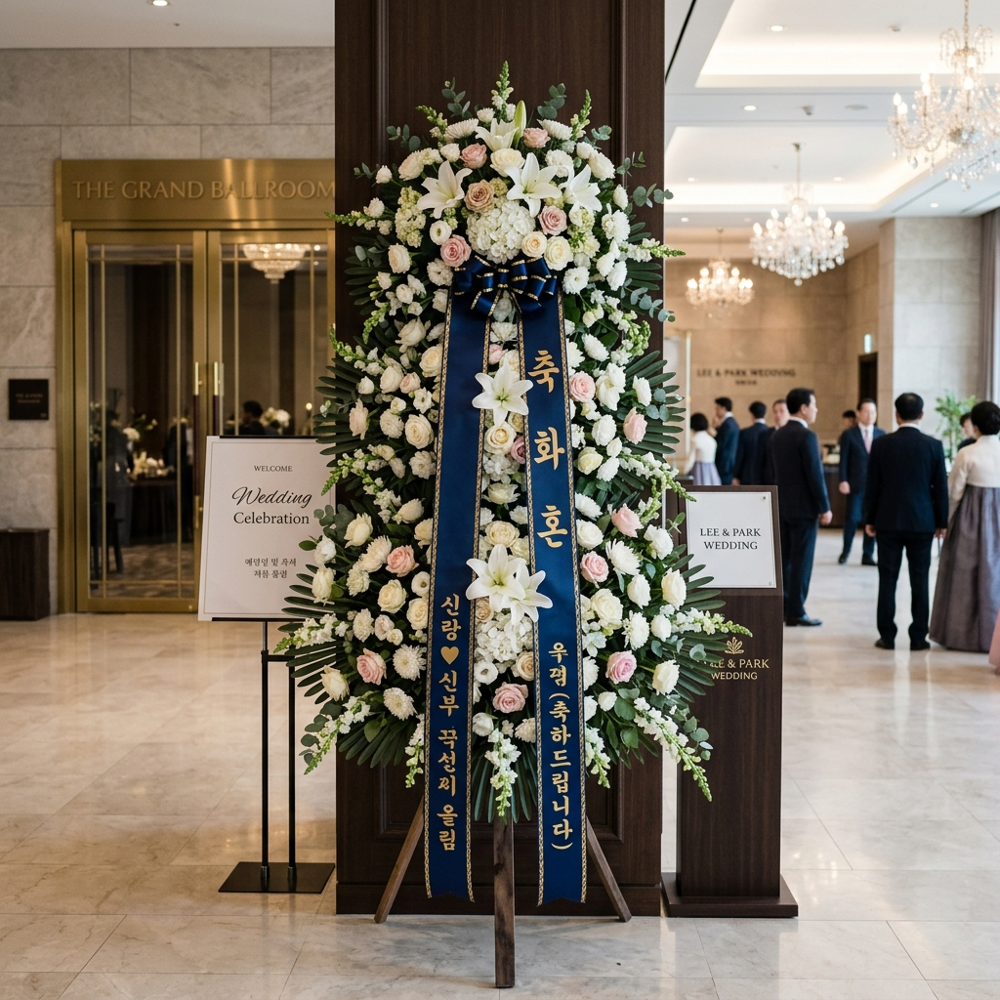

거래처·협력사 경조사 조의금과 축의금 얼마 내야 하나 — 관계별 기준표와 회사 명의 비용 처리 체크리스트
비즈니스 현장에서 거래처 담당자나 협력사 대표, 임원진의 결혼식 청첩장이나 부고 소식을 받았을 때 축의금이나 조의금을 개인 사비로 내야 하는지 회사 비용으로 처리할 수 있는지, 그리고 적정 금액은 얼마인지 난감해지는 경우가 많습니다.
단순 업무 거래처부터 연간 계약을 맺고 있는 핵심 협력사까지 비즈니스 친밀도와 직급별 통상 경조금 가이드라인을 알기 쉽게 정리해 드립니다.
법인세법 및 소득세법상 1회당 20만 원 이하 경조사비에 대해 세금계산서나 현금영수증 없이 모바일 부고장·청첩장 캡처본만으로 접대비(복리후생비) 손금 산입을 인정받는 세무 증빙 기준과 화환 리본 문구 작성 양식까지 비즈니스 에티켓과 실무를 완벽히 마스터해 보세요.
비즈니스 경조사 봉투 작성과 모바일 초대장 확인 / AI 제작 이미지
01 | 거래처 경조사비 금액 가이드라인과 비즈니스 에티켓 핵심 요약
직장 생활과 사업 운영에서 거래처 경조사는 단순한 인간관계를 넘어 향후 원활한 업무 협력과 파트너십 유지를 위한 중요한 비즈니스 에티켓입니다.
친구 사이에는 5만 원, 10만 원 등 정형화된 기준이 비교적 명확하지만, 거래처는 업무 관계의 깊이, 직급, 회사의 위상, 향후 계약 연장 여부 등 복합적인 요소를 고려해야 합니다.
통상적으로 실무 담당자 간의 교류 수준이라면 5만 원에서 10만 원, 팀장급이나 핵심 프로젝트 협력사 임직원이라면 10만 원에서 20만 원, 대표이사 친족이나 핵심 전략 파트너사라면 회사 명의 화환과 함께 20만 원에서 30만 원 선이 일반적인 관례입니다.
이때 가장 중요한 원칙은 과도한 금액으로 상대방에게 부담을 주거나 청탁금지법상 이해충돌 소지를 만들지 않으면서도, 정중한 예를 갖추는 균형점을 찾는 것입니다.
02 | 거래처 업무 밀접도 및 관계별 축의금·조의금 통상 기준표
상대방과의 업무적 거리감에 따라 가장 보편적으로 통용되는 금액 기준표를 정리해 드립니다.
| 거래처 업무 관계 및 상대 직급 |
통상 권장 금액 |
참석 여부 및 화환 지원 |
비고 및 판단 기준 |
| 일반 거래처 실무자 (이메일/유선 소통 위주) |
5만 원 ~ 10만 원 |
불참 시 봉투 송금 / 동료 취합 |
가장 일반적인 수준, 과도하지 않게 |
| 핵심 협력사 담당 팀장·실무 핵심 |
10만 원 |
식장 직접 참석 또는 위임 전달 |
프로젝트 진행 중 긴밀한 관계 |
| 주요 매출처·협력사 임원 및 대표이사 본인 |
10만 원 ~ 20만 원 |
직접 참석 + 회사 명의 화환 발송 |
사측 대표성 인정되는 경우 |
| 핵심 거래처 대표이사 부모상·배우자상 (부고) |
20만 원 (또는 화환 병행) |
대표·임원 조문 + 회사 명의 조화 |
비즈니스 신의성실의 핵심 표현 |
단, 본 기준은 어디까지나 참고용 통상 관례이며, 본인 회사의 내부 경조사 지원 규정과 업계 특성을 반영하여 최종 결정하는 것이 합리적입니다.
03 | 개인 부담 vs 회사 경비 처리 기준과 직급별 분담 관례
거래처 경조사비를 지출할 때 "이것을 내 사비로 내야 하는가, 아니면 회사 법인카드로 결제하거나 경비 청구를 할 수 있는가"가 가장 큰 고민거리입니다.
회사 사규의 '경조사비 지원 규정'에 거래처 축의금·조의금 지원 항목이 명시되어 있다면 당연히 회사 법인 자금(접대비 또는 복리후생비 계정)으로 집행해야 합니다.
사규상 회사 지원 범위(예: 1사당 10만 원 또는 화환 1점)가 정해져 있는 경우, 회사 명의로 지원 한도 내에서 지출하고 실무 담당자가 개인적으로 친분이 두텁다면 개인 사비로 소액(5만 원 안팎)을 보태는 것이 매끄러운 방법입니다.
만약 회사 차원의 지원이 전혀 없는 영세 사업장이나 일반 사원 개인 명의로 부고장을 받았더라도, 업무상 지속적인 협조가 필요한 거래선이라면 최소 5만 원 정도를 성의 표시로 송금하는 것이 비즈니스 매너입니다.
04 | 법인세법상 경조사비 20만원 한도 손금 산입 요건과 세무 증빙
기업이나 개인사업자가 거래처에 지출한 경조사비는 세법상 접대비(기업업무추진비)로 인정받아 회사의 비용(손금)으로 털어낼 수 있습니다.
원칙적으로 3만 원을 초과하는 접대비는 세금계산서, 계산서, 신용카드 매출전표, 현금영수증 등 '적격증빙'을 수취해야만 전액 비용 처리가 가능합니다.
하지만 축의금이나 조의금은 성격상 상대방으로부터 세금계산서나 카드 영수증을 받는 것이 불가능합니다.
이에 따라 세법에서는 거래처 경조사비에 한하여 1건당 20만 원 이하의 지출은 적격증빙 없이도 손금 산입을 인정하는 특별 예외 조항을 두고 있습니다.
만약 1건당 20만 원을 초과하여 지출(예: 30만 원)하게 되면, 20만 원 초과분만 부인되는 것이 아니라 30만 원 전액이 손금불산입(비용 불인정) 처리되므로, 세무 리스크를 피하려면 반드시 1회 지출액을 20만 원 이하로 맞추어야 합니다.
05 | 모바일 부고장·청첩장 캡처로 세무 증빙 만드는 법과 지출결의서 작성 요령
20만 원 이하의 경조사비를 회사 경비로 회계 처리하기 위해서는 세무조사 시 국세청에 소명할 수 있는 '객관적 입증 자료'를 갖추어야 합니다.
📑 거래처 경조사비 완벽 세무 증빙 구비 절차
1. 초대장 원본 캡처 : 카카오톡 또는 문자로 수신한 '모바일 청첩장' 또는 '모바일 부고장' 화면을 날짜, 혼주/상주 성명, 예식장/장례식장 주소가 선명하게 보이도록 캡처.
2. 종이 청첩장·부고장 보관 : 우편으로 종이 청첩장을 받았다면 봉투와 내지를 지출결의서 뒷면에 원본 첨부.
3. 계좌이체 확인증 출력 : 무통장 입금 또는 계좌 송금 시 은행 앱에서 '이체확인증(수취인명, 송금액, 송금일시 명시)' PDF 다운로드 및 출력.
4. 지출결의서 작성 : 적요란에 'OO기업 OOO 부장 부친상 조의금'과 같이 거래처명, 대상자 성명 및 직급, 경조사 사유를 구체적으로 기재.
이와 같이 청첩장/부고장 캡처본과 송금확인증을 지출결의서에 함께 편철해 두면 법인세 및 종합소득세 신고 시 완벽한 비용 증빙으로 인정받을 수 있습니다.

비즈니스 경조사 축하·근조 화환과 격식 있는 리본 문구 / AI 제작 이미지
06 | 거래처 화환 주문 시기 및 리본 문구 양식 (축발전·근조 등) 모음
금액 송금과 더불어 회사의 격을 나타내고 성의를 극대화하기 위해 축화환이나 근조화환을 발송하는 경우가 많습니다.
화환은 예식이나 장례식 시작 최소 3~4시간 전에 도착하도록 전날이나 당일 아침 일찍 주문해야 좋은 자리에 진열될 수 있습니다.
리본은 정면 기준 우측 리본에 경조사 문구를, 좌측 리본에 보내는 사람(회사명 및 직함)을 인쇄하는 것이 표준 양식입니다.
🎀 그대로 복사해 쓰는 화환 리본 문구 모음
· 결혼식 축하 : 祝 結婚 (축 결혼), 祝 華婚 (축 화혼 - 신부 측), 結婚을 祝賀합니다
· 장례식 애도 : 謹弔 (근조), 弔意 (조의), 昇天을 哀悼합니다 (기독교), 冥福을 빕니다
· 개업 및 이전 : 祝 發展 (축 발전), 祝 開業 (축 개업), 祝 創立 (축 창립), 無窮한 發展을 祈願합니다
· 승진 및 취임 : 祝 昇進 (축 승진), 祝 就任 (축 취임), 祝 榮轉 (축 영전)
· 보내는 측 (좌측) : [회사명] 대표이사 [이름] 또는 [회사명] [부서명] 일동
화환 주문 시에는 행사 당일 발주처로부터 현장 배송 완료 사진을 전송받아 리본 오탈자가 없는지 확인하는 습관이 필요합니다.
07 | 직접 참석 vs 봉투 전달 vs 계좌 송금 — 상황별 선택 기준과 예절
모든 거래처 경조사에 직접 발걸음하기는 현실적으로 불가능하므로 상황에 맞는 전달 방식을 택해야 합니다.
수도권 내에서 열리는 주요 협력사 대표나 직속 업무 파트너의 경조사라면 가급적 직접 참석하여 얼굴을 비추고 5~10분이라도 인사를 나누는 것이 관계 형성에 가장 강력한 효과를 냅니다.
지방 먼 거리이거나 일정이 겹친 경우, 동료나 상임 직원이 대신 참석한다면 봉투를 위임 전달하는 것이 예의입니다.
참석자가 전혀 없는 경우에는 모바일 부고장이나 청첩장에 안내된 혼주/상주 계좌로 계좌 송금 후 정중한 문자 메시지를 남기는 것이 원칙입니다.
📱 불참 송금 시 정중한 문자 예시
"OO기업 OOO 팀장님, 부친의 별세 소식에 깊은 슬픔과 애도를 표합니다. 직접 찾아뵙고 위로의 말씀을 드려야 마땅하나, 부득이한 사정으로 조문치 못함을 너그럽게 혜량해 주시길 바랍니다. 삼가 고인의 명복을 빕니다. - [회사명] [성명] 배상"
송금 시 보낸 사람 이름 뒤에 회사명을 병기(예: 홍길동(한국상사))해 두면 상대방이 축의금·조의금 장부를 정리할 때 혼선을 방지할 수 있습니다.
08 | 김영란법(청탁금지법) 적용 대상 여부와 공직자·공기업 거래처 경조사비 가액 한도
만약 상대 거래처가 공기업, 준정부기관, 국공립 연구원, 공직 유관단체이거나 상대방이 공무원 신분이라면 부정청탁 및 금품등 수수의 금지에 관한 법률(청탁금지법)을 철저히 준수해야 합니다.
직무 관련성이 있는 공직자 등에게 제공할 수 있는 경조사비(축의금, 조의금)의 가액 한도는 현금 5만 원으로 제한됩니다.
단, 화환이나 조화(꽃바구니)는 10만 원까지 가능하며, 현금과 화환을 함께 보낼 때도 합산 금액이 10만 원을 넘지 않아야 하며, 그중 현금은 5만 원을 초과할 수 없습니다.
순수 민간 기업 간의 거래처 경조사비는 청탁금지법 적용 대상이 아니므로 세법상 20만 원 한도 내에서 자유롭게 책정할 수 있지만, 정부 기관이나 공기업 파트너와 일할 때는 법적 처벌 위험이 있으므로 가액 기준을 엄격히 확인해야 합니다.
09 | 거래처 경조사 발생 시 당황하지 않는 단계별 업무 대응 체크리스트
거래처 경조사 소식을 접했을 때 실수를 방지하기 위한 최종 업무 처리 체크리스트입니다.
📋 거래처 경조사 발생 시 실무 체크리스트
1. 신분 확인 : 상대방이 공직자·공기업 소속인지 확인하여 청탁금지법 가액(현금 5만원, 화환 10만원) 적용 여부 판단.
2. 사내 경비 지원 규정 확인 : 회사 경비 처리 가능 금액 및 화환 지원 가능 여부 총무/회계팀 사전 승인.
3. 20만 원 한도 준수 : 회사 접대비 손금 산입을 위해 1사당 현금 지출액을 20만 원 이하로 집행.
4. 증빙자료 즉시 캡처 : 모바일 청첩장/부고장 수신 즉시 스크린샷 캡처 및 송금확인증 다운로드.
5. 화환 리본 검수 : 화환 발송 시 업체에 배송 완료 사진 요청 및 오탈자 확인.
6. 정중한 인사 전달 : 불참 시 축하 또는 애도 메시지에 회사명과 성명을 함께 적어 정중히 발송.
상대방의 기쁨과 슬픔을 진심으로 함께 나누며 회사와 개인의 신뢰를 탄탄히 다지는 기회로 삼아보시길 바랍니다.
#거래처경조사비
#거래처축의금기준
#거래처조의금얼마
#경조사비손금산입
#접대비20만원한도
#청첩장세무증빙
#모바일부고장증빙
#화환리본문구
#청탁금지법경조사비
#비즈니스에티켓